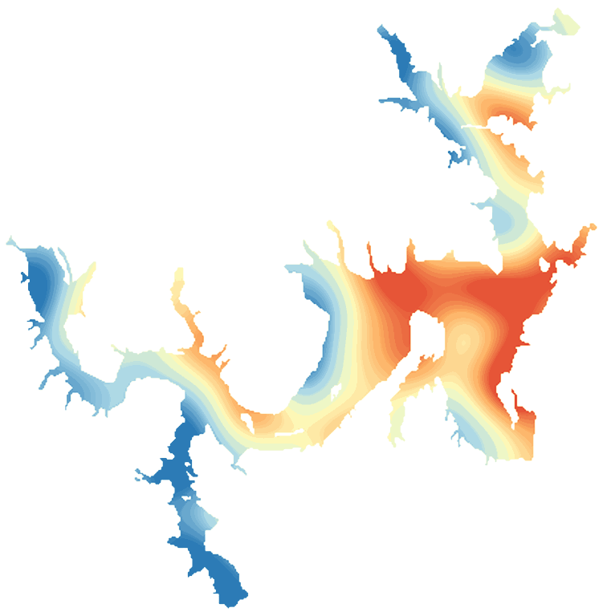

LakeScope › OK
Lake Texoma today
Updated 2026-11-14 - Atlas Labs
Some algae possible, 66°F water, level steady, near normal, windy Saturday (15 mph ESE).
Water level
617.10 ft
USGS gauge 07331455 - 2026-11-14
7-day trend: steady (+0.12 ft). Compared with normal for this date: +0.8 ft (same weeks, 2016-2025).
Water clarity and algae
Some algae possible Last clear view: a few days ago.
Surface temperature
66°F
seen from space on 2026-11-12

Weather, next 3 days
| Day | Sky | High / low | Wind | Rain |
|---|---|---|---|---|
| Saturday | Mostly Cloudy | 59 / 44°F | 15 mph ESE | 13% |
| Sunday | Rain Showers | 48 / 48°F | 15 mph E | 100% |
| Monday | Partly Sunny | 56 / 47°F | 5 mph E | 0% |
Sunrise 06:58 - sunset 17:23 - Waxing crescent. National Weather Service.
Get the LakeScope app: alerts and the 3-D view of Lake Texoma